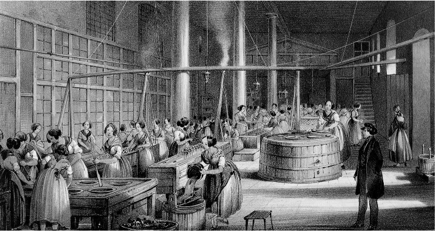

Nella fabbrica il processo di lavorazione era suddiviso in una serie di operazioni semplici e ripetitive assegnate a lavoratori diversi, i quali intervenivano uno dopo l'altro per eseguire ciascuno la propria parte di lavoro. Questa specializzazione consentiva una produzione più efficiente e una maggiore quantità di beni prodotti. Tuttavia, portava anche a lavori più ripetitivi e monotoni per gli operai, spesso con condizioni di lavoro difficili e lunghe ore lavorative. Per comprendere il concetto di divisione del lavoro si cita spesso l'esempio proposto da Adam Smith, il maggiore economista del Settecento. Smith descrive il processo di fabbricazione di uno spillo. Un operaio non addestrato da solo riesce a malapena a produrre una ventina di spilli al giorno. In una fabbrica di spilli, invece, tutto il processo di lavoro è suddiviso in diciotto operazioni diverse, affidate ad altrettanti lavoratori: uno riduce il metallo in fili, un altro raddrizza il filo metallico, un terzo lo taglia, un quarto gli fa la punta, un quinto lo schiaccia in cima per infilargli la capocchia ecc. Le operazioni compiute da ciascun operaio sono elementari e non richiedono particolare esperienza. Ma alla fine della giornata gli spilli prodotti sono molte decine di migliaia e il proprietario della fabbrica, vendendoli, guadagna molto di più.